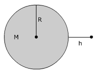
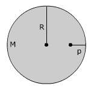

Para puntos situados en la superficie del planeta o más allá
este se comporta como si toda su masa estuviera concentrada pun-tualmente
en el centro.
Campo a una altura h sobre la superficie:

$$E=\frac{G\,M}{r^2}$$
(r = R + h)
Para puntos situados a poca altura sobre la superficie del planeta
(h << R) el campo gravitatorio se puede considerar constante
e igual al de la superficie E = G·M/R2. Este campo
gravitatorio en las cercanías del planeta se denomina gravedad
Campo dentro del planeta
Para puntos situados dentro del planeta este se comporta como si una
parte de su masa estuviera concentrada puntualmente en el centro. Esta
masa parcial es la que tendría un 'subplaneta' concéntrico
de radio r
Campo a una profundidad p bajo la
superficie:

$\displaystyle M'=M\left(\frac{r}{R}\right)^3$
r = R - p